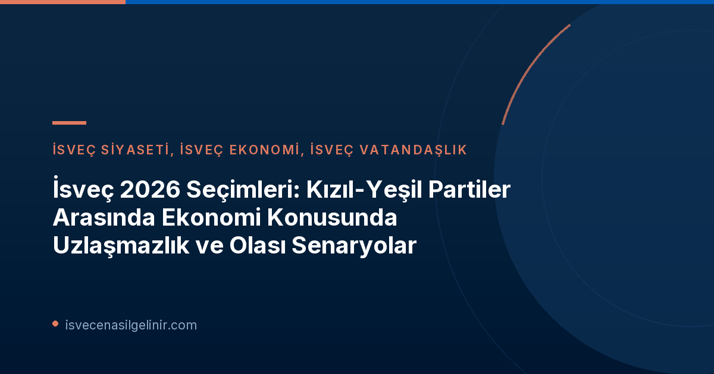

İsveç Siyasetinde Kızıl-Yeşil Blok: Ekonomi Üzerine Derin Çatlaklar
SVT'nin seçim öncesi yaptığı kapsamlı araştırma, İsveç'in Kızıl-Yeşil partilerinin ekonomi alanında ne denli farklı görüşlere sahip olduğunu ortaya koydu. Vergi düzenlemelerinden sosyal yardım programlarına, kamu harcamalarının önceliklendirilmesinden istihdam politikalarına kadar uzanan geniş bir yelpazede, 17 temel ekonomi sorusundan sadece dördünde uzlaşma sağlanabildiği belirtiliyor. Bu durum, potansiyel bir koalisyon hükümetinin kurulması halinde ekonomi politikalarının belirlenmesinde ciddi zorluklarla karşılaşılabileceğine işaret ediyor.
Partiler arasındaki bu derin ayrılıklar, özellikle İsveç'in sosyal refah modelinin geleceği, ekonomik büyümenin teşvik edilmesi ve bölgesel kalkınma gibi kilit alanlarda farklı yaklaşımların benimsenmesi gerektiği düşüncesinden kaynaklanıyor. Her parti, kendi seçmen tabanına ve ideolojik duruşuna uygun ekonomi politikalarını savunarak, bir sonraki seçimde seçmenlerin desteğini kazanmayı hedefliyor.
Uzlaşma Yolları ve Sosyal Demokratların Rolü
Elisabeth Marmorstein'dan Analizler
İsveç'in önde gelen iç politika yorumcularından Elisabeth Marmorstein, SVT'ye yaptığı açıklamada, Kızıl-Yeşil blok içinde bir uzlaşmanın mümkün olduğunu ve özellikle Sosyal Demokratların (S) işbirliği ortaklarını memnun etmek adına "çok ileri gitmeye" hazır olduklarını belirtti. Marmorstein'a göre, geçmiş deneyimler Sosyal Demokratların pragmatik bir yaklaşımla, ittifakın sürdürülebilirliği için tavizler verebildiğini gösteriyor. Bu durum, partilerin seçim sonrası masaya oturduklarında sert duruşlarını yumuşatabilecekleri ve ortak bir zemin bulabilecekleri anlamına gelebilir.
Seçmenlerin Beklentileri: "Verilen Sözler Tutulmalı"
Stockholm'de SVT tarafından görüşülen seçmenler, siyasi partilerin seçim öncesinde verdikleri vaatlere sadık kalmasının önemini vurguluyor. Ewa Orlowska adlı bir seçmen, "Seçmenlerinizi yüzüstü bırakamazsınız," diyerek, özellikle somut seçim vaatleri söz konusu olduğunda, partilerin bu sözleri yerine getirmesi gerektiğini dile getirdi. Bu seçmen beklentisi, koalisyon görüşmelerinde partilerin üzerinde ciddi bir baskı oluşturacak ve verilen tavizlerin seçmen nezdinde nasıl algılanacağı konusunda stratejik kararlar alınmasını gerektirecektir.
Anlaşmazlık Konuları ve Olası Etkileri
Kızıl-Yeşil partiler arasındaki başlıca anlaşmazlık konuları, İsveç ekonomisinin temel direklerini oluşturan alanlarda yoğunlaşıyor:
- Karensavdraget (İlk Hastalık Günü Kesintisi): Bu, çalışanların ilk hastalık günlerinde maaşlarından yapılan bir kesintidir. Bazı partiler bu kesintinin tamamen kaldırılmasını veya azaltılmasını savunurken, diğerleri mevcut sistemin sürdürülmesinden yanadır. Bu konuda yapılacak bir değişiklik, İsveç'teki çalışma hayatını doğrudan etkileyecektir.
- Vergi Politikaları: Gelir vergisi oranları, kurumlar vergisi, çevre vergileri ve sermaye kazançları vergisi gibi konularda partiler arasında belirgin farklılıklar bulunuyor. Bazı partiler daha yüksek vergi oranlarını savunurken, diğerleri vergi yükünün azaltılmasını ve ekonomik teşviklerin artırılmasını önermektedir.
- Sosyal Yardımlar: İşsizlik sigortası, çocuk yardımları, emeklilik maaşları ve konut yardımları gibi sosyal yardım programlarına yapılacak harcamaların düzeyi ve kapsamı konusunda görüş ayrılıkları mevcut. Bu alandaki kararlar, İsveç'teki refah devletinin geleceğini şekillendirecektir.
- Devlet Harcamaları ve Yatırımlar: Eğitim, sağlık, altyapı projeleri, savunma ve iklim değişikliği ile mücadele gibi alanlarda devletin ne kadar ve nereye yatırım yapması gerektiği konusundaki stratejik farklılıklar, bütçe görüşmelerinin en çetin konularından biri olacaktır.
Bu anlaşmazlıklar, İsveç'in genel ekonomik gidişatını, iş piyasasını ve sosyal politikalarını önemli ölçüde etkileyebilir. İsveç'e yeni gelenler veya İsveç Vatandaşlık Testi'ne hazırlananlar için, ülkenin siyasi ve ekonomik yönelimlerini anlamak, gelecekteki entegrasyon süreçleri ve yaşam kalitesi açısından kritik öneme sahiptir. Sverigemedborgarskapsprov.com adresini ziyaret ederek, İsveç'teki güncel siyasi gelişmelerin vatandaşlık süreçlerine olası etkileri hakkında daha fazla bilgi edinebilirsiniz.
2026 Seçimleri ve Gelecek Senaryoları
Koalisyon Görüşmeleri ve Zorlu Süreç
SVT raporunda belirtilen 13 maddelik anlaşmazlık, 2026 seçimleri sonrasında bir hükümetin kurulması için yapılacak koalisyon görüşmelerinin ne denli zorlu geçebileceğinin bir göstergesidir. Partiler, seçmenlerine verdikleri sözler ile uzlaşma ihtiyacı arasında denge kurmak zorunda kalacaklardır. Bu süreç, siyasi liderlerin müzakere becerilerini ve uzlaşma kapasitelerini test edecektir.
Erken Seçim İhtimali
Duyuruda yer alan "Det här talar emot att regeringsbildningen slutar i extraval" (Bu, hükümet oluşumunun erken seçimle sonuçlanmasına karşı konuşuyor) ifadesi, mevcut siyasi aktörlerin erken seçime gitmekten kaçınma eğiliminde olduğunu göstermektedir. Bir erken seçim, partiler için ek maliyet, belirsizlik ve risk anlamına geldiğinden, genellikle son çare olarak görülür. Bu nedenle, uzlaşma arayışlarının yoğunlaşması ve bir koalisyon hükümeti kurma çabalarının ön planda olması beklenmektedir.
Önemli Çıkarımlar
- Kızıl-Yeşil blok, 2026 seçimleri öncesi 17 ekonomi sorusunun 13'ünde uzlaşamıyor.
- Ana anlaşmazlık konuları arasında vergiler, sosyal yardımlar, kamu harcamaları ve Karensavdraget yer alıyor.
- Sosyal Demokratlar, işbirliği ortaklarını memnun etmek için uzlaşmaya istekli olduklarını belirtiyor.
- İsveçli seçmenler, siyasi partilerin seçim öncesi verdikleri sözlere sadık kalmasını büyük önem taşıyor.
- Hükümet kurma süreçlerinde erken seçim yerine uzlaşma yolunun tercih edilmesi bekleniyor.
Referanslar
SVT Nyheter – Rödgröna oense om 13 av 17 ekonomifrågor
İsveç'teki Siyasi Gelişmelerden Haberdar Olun!
İsveç'teki güncel siyasi ve ekonomik gelişmelerin göçmenlik ve vatandaşlık süreçleri üzerindeki olası etkilerini kaçırmamak için bizi takip edin ve en doğru bilgilere ulaşın.